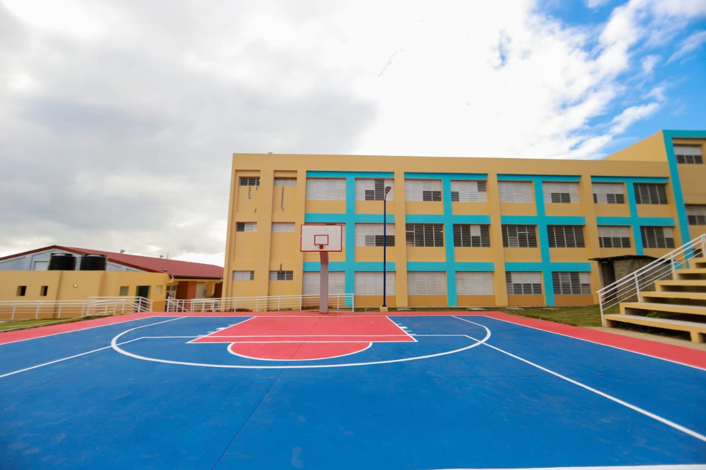
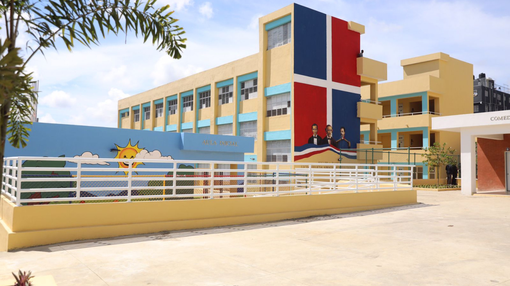

La Escuela Católica-Salesiana es una institución educativa que se inspira en el legado pedagógico y espiritual de San Juan Bosco, fundador de la Congregación Salesiana. Su misión es formar a los jóvenes como buenos cristianos y honrados ciudadanos, a través de una educación integral que abarca el desarrollo académico, humano y espiritual.

